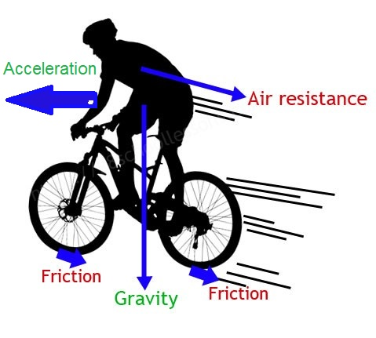
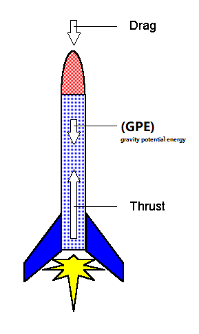
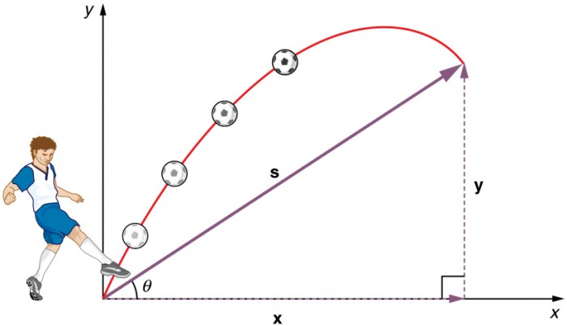
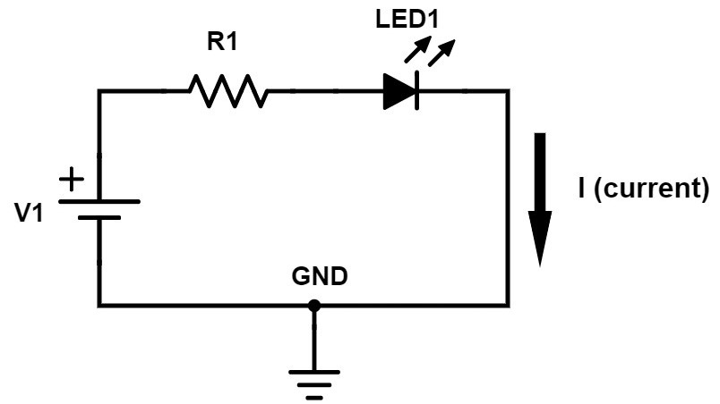

Riding Bicycle from Physics Perspective

In this example we will be covering four types of forces static friction, kinetic friction, gravity, acceleration and air resistance.
Static Friction: If we look closer the road pushing forward on the wheel, which sends the wheel forward. Between the wheel and tire, there is contact point which is constant and that case static friction.
Kinetic Friction: When the bicycle is slowing down or you hold the brake and the tire is slipping on the road at this time some of the kinetic energy transferred to the brake and some to hub.
Gravity: Any object that is on the surface and has matter it has gravity.If we have mass of 120kg of the bicycle by using the equation Fg = mg we can tell the gravity of the object is 1,176.
Acceleration: While you moving pedal the pedals effect on chain, chain wheel, and wheel to movie the bicycle forward. Once the bicycle movie forward and start speeding up there comes acceleration. By using a = delta v/delta t we can solve for acceleration.
Air resistance: While you are riding a bicycle, there is always air resistance on the opposite direction. The faster you go the greater the air resistance is.
Forces Acting On Rocket/Fireworks

As we all know in every holiday people are using fireworks to enjoy themselves. Firework is not so different from a simple rocket. In this lesson we will be explaining some of the forces such as thrust force, drag force and gravity potential energy that act on rocket/fireworks.
Thrust force: is a force or a push. When a system pushes or accelerates mass in one direction, there is a thrust (force) just as large in the opposite direction. Thrust is also described by Isaac Newton’s second and third laws. Thrust is used to describe how strongly an engine pushes. It can be used for many kinds of vehicles and engines such as rockets, planes, motorboats, propellers and jet engines.Finally, to calculate the word done by thrust the equation is WT = delta d cos0.
drag force: is the resistance force caused by the motion of the body through a fluid, such as water of air. The drag forces are always acts the opposite of the direction of the oncoming flow velocity. For example, if you move your hand trough the water or fast wind the force that your hand does not let movie is the drag force. To calculate the work done by drag force we use the equation WD = delta d cos0 or D = CPA.
Gravitational potential energy: is energy an object possesses because of its position in a gravitational field. The most common use of gravitational potential energy is for an object near the surface of the Earth where the gravitational acceleration can be assumed to be constant at about 9.8 m/s2. To calculate the GPE, we can use the equation.
GPE = mgh.
Projectile Motion

Projectile motion: is a form of motion experienced by an object or particle that is thrown near the Earth's surface and moves along a curved path under the action of gravity only. This curved path was shown by Galileo to be a parabola. All projectile motions consists of free fall in the vertical direction and uniform motion in the horizontal.
Free fall: is any motion of a body where gravity is the only force acting upon it. Most importantly, free fall has no force acting on it. At the highest point in its trajectory, the ball has zero velocity, and the magnitude of velocity increases again as the ball falls back toward the earth.
Uniform motion: is the motion of an object in which the object travels in a straight line and its velocity remains constant along that line as it covers equal distances in equal intervals of time.
Electricity And Circuit Diagrams

As far as electricity or it circuit diagrams are concerned there are three most important things such as Current, Voltage and resistance. There are only two types of circuits series and Parallel. In a series circuit, all components are connected end-to-end, forming a single path for current flow. In a parallel circuit, all components are connected across each other, forming exactly two sets of electrically common points.
Electric current: is the rate of flow of electric charge past a point or region. In electric circuits this charge is often carried by electrons moving through a wire. The current is measured in units of Ampere (I or I or A).To calculate the current, we have the equation I = V/R. If the circuits are series we use the equation I1= I2 = I3 = - - - if not, it was parallel we use the equation I1 + I2 + I3 + - - - .
Voltage: is the pressure from an electrical circuit's power source that pushes charged electrons (current) through a conducting loop, enabling them to do work such as illuminating a light. The voltage is measured in units of volts (V). To calculate the voltage, we can use the equation V = R I. If the circuits are series we use the equation V1 + V2 + V3 + - - - if not, it was parallel we use the equation V1= IV2 = V3 = - - -.
Resistance: is an electrical quantity that measures how the device or material reduces the electric current flow through it. The resistance is measured in units of ohms (Ω). To calculate the resistance, we have the equation R = V/I. If the circuits are series we use the equation RT= R1 + R2 + R3 + - - - if not, it was parallel we use the equation 1/Rparallel = 1/R1 + 1/R2 + 1/R3 + - - -.